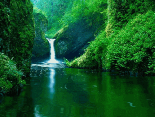
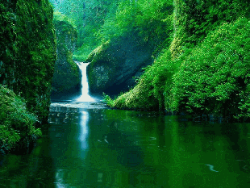

Galería
Fue el primer lugar en la ciudad de Nueva Loja en dedicarse exclusivamente a la protección de flora endémica; el objetivo de desarrollo de este proyecto fue la creación de un refugio para especies de la zona y la mejora de su hábitat
El extenso territorio de bosque protegido del atractivo tiene aproximadamente 25 metros de alto, en donde se conserva la flora autóctona compuesta por especies de árboles como el pambil (Iriartea deltoidea), huarango (Macrolobium acaciifolium), cedrillo (Tapirira guianensis), tagua (Phytelephas aequatorialis)
El espacio tiene alteraciones provocadas por factores naturales como la flora y fauna además de la humedad y el clima que son propias del ecosistema bosque húmedo tropical amazónico
Registra 82 especies vegetales, donde el 90% son nativas y el 10% han sido introducidas. Algunos ejemplares son: palmas, guarumos, platanillo, pambil, palmito y papayuelo.13 Presenta más de 500 especímenes endémicos amazónicos. La mayoría de ellos se encuentran en esta zona para su rehabilitación y futura reintegración, de ser posible, a la vida silvestre.

Galería